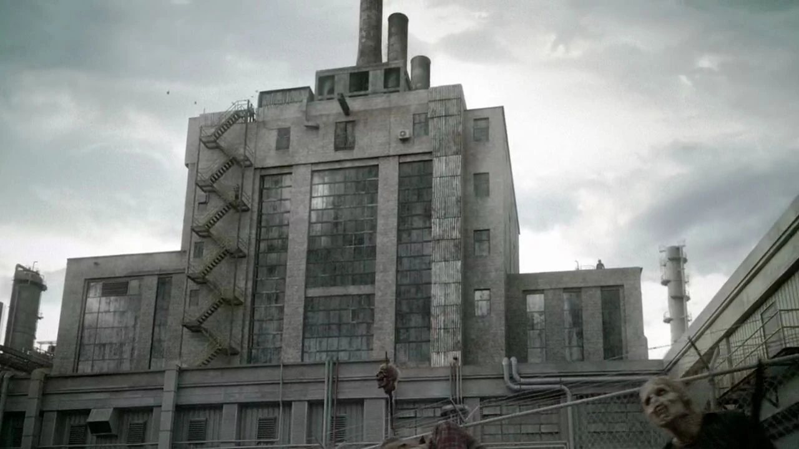

El grupo de los Salvadores estubieron sobreviviendo en una fabrica abandonada llamada el Santuario esta rodeado de unas rejas de metal con caminantes pegados en ellas. En su interior se encontraba la entrada principal que servía como el principal punto de reunión del grupo para escuchar las palabras de su líder